The data that is compiled and analyzed is retrieved from the GGIE website.
User zip codes are used to geographically locate user positions and to chart and
the presence and density of users. This is divided into sections: Country-wise distribution,
State-wise distribution, and County-Wise distribution. Since County-wise distribution is deemed
more important, we further analyze its user-density.
Country-Wise
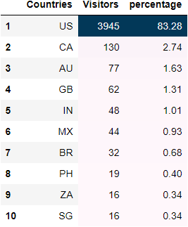
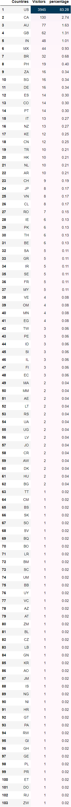
Fig 1: Top countries based on number of users
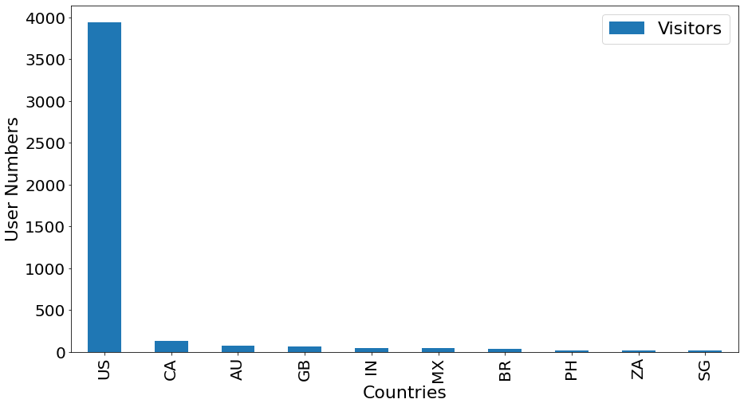
Fig 2: Top countries based on number of users
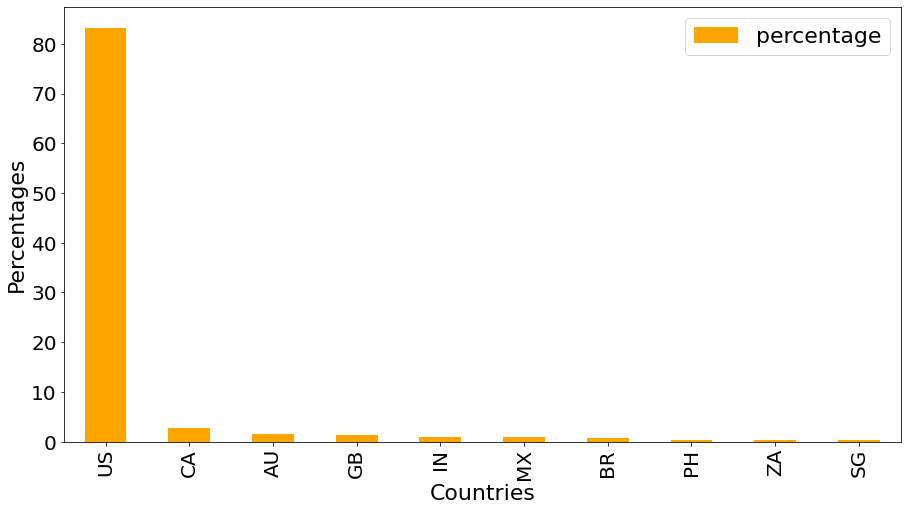
Fig 3: Top countries based on percentages
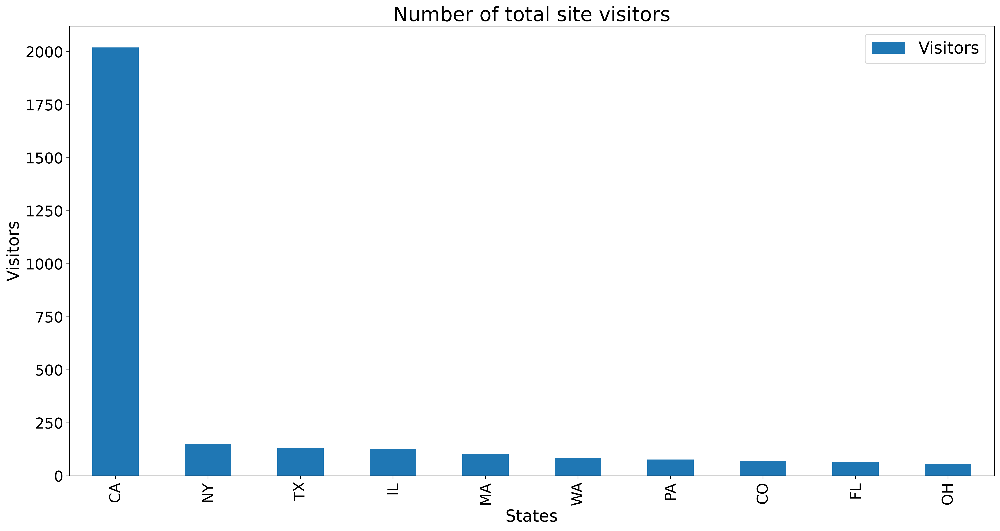
Fig 4: Countries choropleth based on number of users
State-Wise
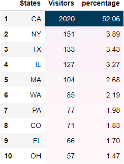
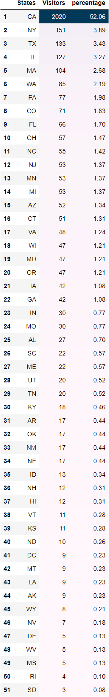
Fig 5: Top 10 US states based on percentage of users
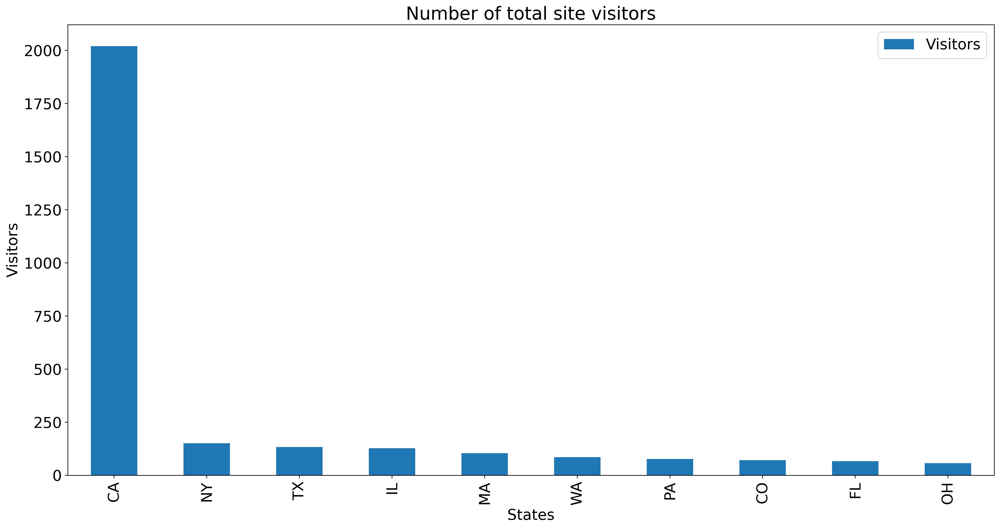
Fig 6: Top 10 US states bar chart for number of users
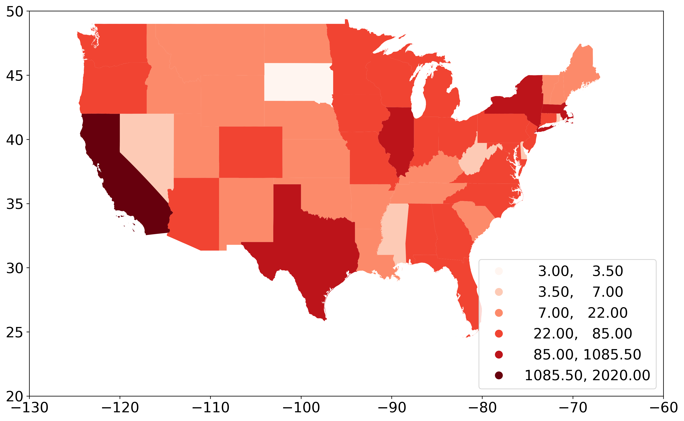
Fig 7: States choropleth based on number of users
County-Wise
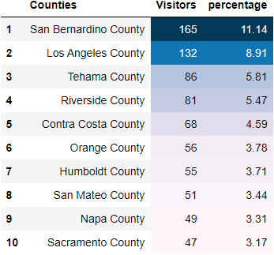
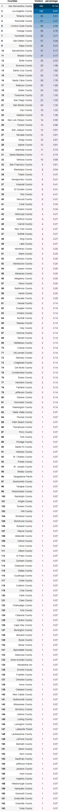
Fig 8: Top 10 California counties based on percentage of users
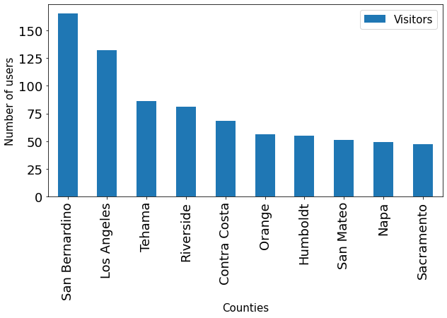
Fig 9: Top 10 CA counties bar chart for number of users
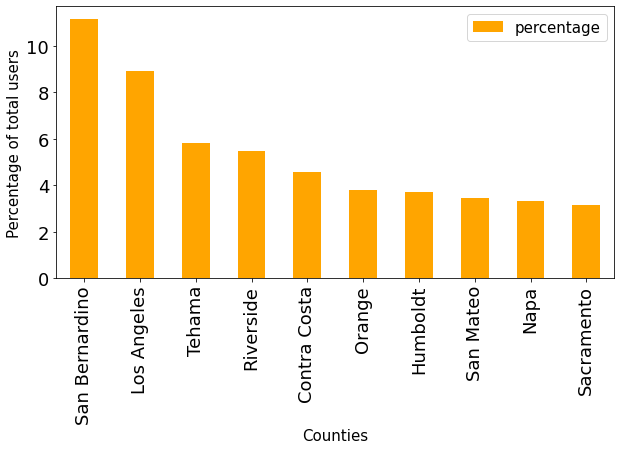
Fig 10: Top 10 CA counties bar chart for user percentages
Fig 11: States choropleth based on number of users
Fig 12: California counties choropleth based on density of users